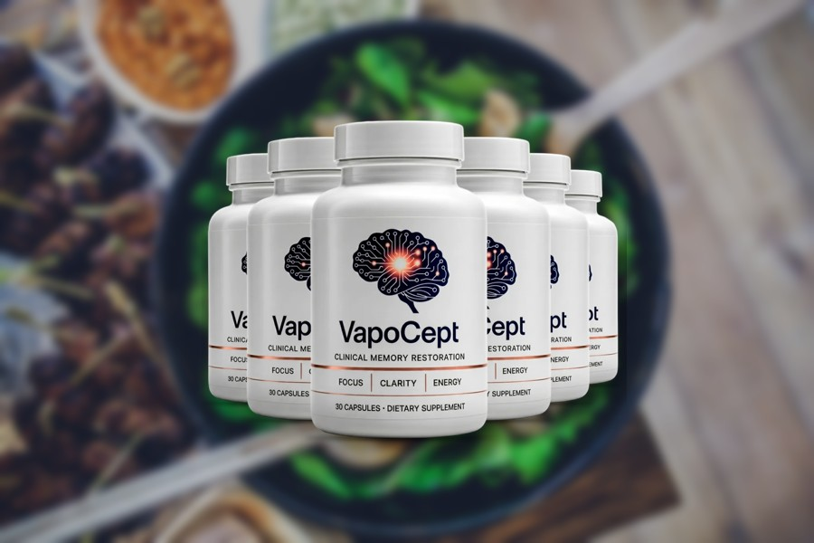
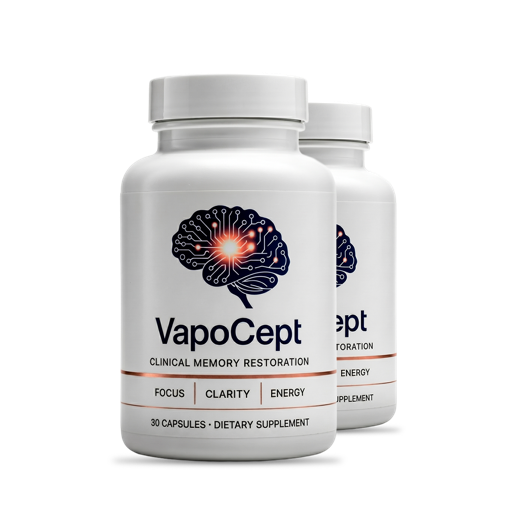
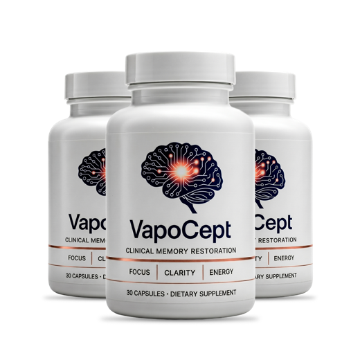

VapoCept Review 2026: Every Dose Checked Against the Research
A ginkgo-themed focus capsule with a fully printed label. We lined up all six doses against the studies, did the cost-per-day math and read the refund terms so you don't have to.

Key takeaways
- Every dose is on the label. Six ingredients, 445 mg in total, one capsule a day, no proprietary blend.
- The biggest ingredient is glucosamine. At 250 mg it's more than half the formula, and it has no memory evidence.
- The ginkgo isn't the studied extract. VapoCept uses a 4:1 extract at 100 mg, not the standardized EGb 761 used in trials at 120–240 mg.
- Cost runs about $1.63 to $2.80 a day depending on the pack, as a one-time charge with a 60-day guarantee on official orders.
- Skip it or ask first if you take blood thinners, have surgery coming, have a shellfish allergy or are pregnant.
Our VapoCept review in one paragraph: it's a one-capsule-a-day supplement with six ingredients, every dose printed, led on paper by 250 mg of glucosamine and 100 mg of ginkgo extract. None of the doses matches what memory research used. It's gentle, stimulant-free and covered by a 60-day guarantee, but expect subtle effects at best.
That's a more cautious verdict than most VapoCept reviews you'll find, and we think it's the useful one. The label is honest about what's inside. The problem is what the numbers say once you line them up against the studies the marketing leans on. Below we go through the formula line by line, the evidence, the real cost per day, the refund, who should skip it, and whether it's worth a trial.

VapoCept: check today's price
A ginkgo-led daily capsule with turmeric, lutein and green tea, every dose printed. One capsule a day, stimulant-free. Sold only on the official site, with a 60-day money-back guarantee.
See the official price →What is VapoCept?
VapoCept is a dietary supplement sold in bottles of 30 capsules. The front of the bottle says it "supports focus and mental clarity" and lists three words: focus, clarity, energy. The serving is one capsule a day with an 8 oz glass of water, ideally 20 to 30 minutes before a meal, so one bottle lasts a month.
It's distributed by Gex Corporation LLP of Ogden, Utah, and the label says it's made in the USA with globally sourced ingredients. The capsule shell is bovine gelatin, with magnesium stearate and microcrystalline cellulose as fillers. There's no caffeine listed and no stimulant on the panel. The sales channel we could verify at the time of writing is the official order page, which is also the only route covered by the money-back guarantee.
One thing VapoCept isn't: a drug. Like every supplement, it carries the FDA disclaimer that it's not intended to diagnose, treat, cure or prevent any disease. If you're worried about memory loss rather than ordinary fogginess, our guide to memory loss versus normal aging is a better first stop than any bottle.
What's in VapoCept? The full label against research doses
Here's every active ingredient from the Supplement Facts panel, next to the amount used in the human studies people usually cite for that ingredient. This table is the core of the review.
| Ingredient (label wording) | VapoCept per capsule | What research typically used | How it compares |
|---|---|---|---|
| D-Glucosamine Sulfate Potassium Chloride | 250 mg | 1,500 mg a day, studied for joints, not memory | About one-sixth of a joint dose; no cognitive trials |
| Ginkgo biloba leaf extract (4:1) | 100 mg | 120–240 mg a day of standardized EGb 761 | Lower dose, and not the standardized extract |
| Turmeric root extract (30:1) | 50 mg | Hundreds of mg of curcumin, often in high-absorption forms | Curcumin content not stated; no absorption aid |
| Marigold flower extract (5% lutein) | 25 mg (about 1.25 mg lutein) | About 10 mg lutein a day, often with zeaxanthin | Roughly one-eighth of the studied amount |
| Green tea leaf extract (98% polyphenols, 50% EGCG) | 15 mg (about 7.5 mg EGCG) | Usually 100s of mg of catechins, or several cups of tea | Less than a single cup of brewed green tea |
| Bamboo leaf extract (30:1, 70% silica) | 5 mg (about 3.5 mg silica) | No memory research to compare against | A small fraction of the silicon in a normal diet |
Add the six lines up and you get 445 mg of active ingredients, and more than half of that weight is glucosamine. For a product sold on focus and clarity, that's an unusual lead. Glucosamine is a joint supplement. We go deeper on why it's there, and on each extract, in our breakdown of VapoCept's ingredients.

The ginkgo detail most reviews miss
Ginkgo is the ingredient the marketing builds around, so the type of extract matters. Almost all of the serious ginkgo research used EGb 761, an extract standardized to about 24% flavone glycosides and 6% terpene lactones. VapoCept lists a 4:1 extract instead. That ratio tells you roughly 400 mg of dried leaf went into making 100 mg of extract. It doesn't tell you how much of the active compounds survived. So you can't assume VapoCept's ginkgo behaves like the ginkgo in the trials, even at a similar weight.
Does VapoCept work? What the evidence supports
There's no published trial on VapoCept itself. Every claim you'll read rests on individual ingredients, and ingredient evidence isn't product evidence, especially when the doses are lower than the studies. With that said, here's the honest state of each piece.
- Ginkgo: the largest prevention trial, the Ginkgo Evaluation of Memory study, gave 240 mg a day of EGb 761 to about 3,000 older adults for roughly six years and found no reduction in dementia and no slowing of cognitive decline. NCCIH summarizes the evidence as not supporting ginkgo for preventing or slowing memory decline. Smaller studies in people with existing cognitive problems have been more positive.
- Turmeric: a small UCLA trial found memory gains with a high-absorption curcumin taken twice daily for 18 months. Broader results are mixed, and plain turmeric extract is poorly absorbed.
- Lutein: studies linking lutein to processing speed and memory in older adults used around 10 mg a day for months. VapoCept supplies about 1.25 mg.
- Green tea: the brain research mostly involves tea drinking or larger extract doses, often alongside caffeine and L-theanine.
- Glucosamine and bamboo silica: no controlled trials show a memory or focus effect.
Put plainly, VapoCept is a low-dose blend of ingredients with mixed evidence at full dose. If you're hoping for the kind of clear change a cup of coffee gives you, you won't get it here, because there's nothing stimulating inside. Our separate page on whether VapoCept works goes ingredient by ingredient on who might notice what.
How much does VapoCept cost per day?
VapoCept is sold in three packages. These are the prices published on the official order page at the time of writing; check the official page for the current numbers before you order.

2 Bottles · Starter $79/bottle Check Availability → + $9.99 shipping
6 Bottles · Best Value
$49/bottle
Claim Discount →
Free US Shipping

3 Bottles · Popular $69/bottle Claim Discount → Free US ShippingPrices shown are the manufacturer's published rates at the time of writing and can change without notice.
| Package | Price | Days of supply | Cost per day |
|---|---|---|---|
| 2 bottles | $79 per bottle, $158 + $9.99 shipping | 60 | About $2.80 with shipping |
| 3 bottles | $69 per bottle, $207, free US shipping | 90 | About $2.30 |
| 6 bottles | $49 per bottle, $294, free US shipping | 180 | About $1.63 |
The math is simple: total price divided by the number of capsules, since you take one a day. Each order is a one-time charge, not a subscription, so nothing renews unless you place another order. For context, a single-ingredient ginkgo product standardized to the EGb 761 specification usually costs less per day than any of these packs. What you're paying extra for here is the combination and the guarantee, not a higher dose. Our VapoCept price guide walks through which pack fits which plan.
What's the VapoCept refund policy?
Orders placed through the official checkout come with a 60-day money-back guarantee. Contact customer service within that window to start a return; the label lists a phone number, +1 (507) 448-8190, and the email contact@customercs.com. Before you order, read the current terms on the official page for two details that vary between sellers: whether the 60 days count from the order date or the delivery date, and whether you have to send back the bottles and pay return postage.
Timing matters with this product. Ginkgo studies usually run at least 8 to 12 weeks, which is longer than the guarantee. If you're testing it, judge it around day 45 to 50 so your request lands inside the window. The guarantee is tied to official orders, so a bottle from a third-party marketplace may not be covered.
VapoCept side effects: who should skip it?
At these doses, most healthy adults are unlikely to have trouble. The most common complaints with ginkgo, turmeric and glucosamine are mild: an upset stomach, loose stools, headache or dizziness. The real concerns are about interactions and specific groups. Skip VapoCept, or get your doctor's sign-off first, if any of these apply:
- You take a blood thinner (warfarin, apixaban, rivaroxaban, clopidogrel) or daily aspirin, or you have a bleeding disorder. Ginkgo and turmeric can both affect bleeding, and glucosamine has been reported to raise INR in people on warfarin.
- You have surgery or dental work coming up. Stop well before, on your surgeon's advice; two weeks is a common guideline for ginkgo.
- You have a shellfish allergy. Glucosamine is often made from shellfish shells, and the label doesn't state the source.
- You're pregnant, nursing or under 18. The label itself says to consult a physician.
- You've been diagnosed with mild cognitive impairment. One observational analysis linked glucosamine use with faster progression to dementia, which we cover in our report on the glucosamine study. It doesn't prove harm, but it's a reason to ask first.
- You avoid bovine products for dietary or religious reasons. The capsule is beef gelatin.
- You have gallbladder disease, a seizure disorder or take several prescription drugs. Ask your pharmacist to run an interaction check.
The full list, with what to watch for in the first two weeks, is in our VapoCept side effects guide.
Is VapoCept legit or a scam?
Based on what we could check, VapoCept is a real supplement from a named US distributor with a printed address and phone number, a complete label and a stated refund window. Those are the basics a scam usually skips. Being legitimate isn't the same as being effective, though. The fair criticism of VapoCept is about dosing and ingredient choice, not about whether a bottle shows up.
Be wary of pages selling it with countdown timers, celebrity stories or claims that it reverses memory loss. None of that is on the label, and no supplement can back it up.
VapoCept pros and cons
| Pros | Cons |
|---|---|
| Every dose printed, no proprietary blend | Glucosamine, a joint ingredient, is the largest line |
| One capsule a day, simple routine | Ginkgo is a 4:1 extract, not the standardized EGb 761 from the trials |
| Stimulant-free; won't affect sleep the way caffeine products can | Lutein, green tea and silica doses are token amounts |
| One-time purchase, no subscription | $1.63 to $2.80 a day is high for these doses |
| 60-day money-back guarantee on official orders | No trial on the finished product; guarantee is shorter than ginkgo studies |
How does VapoCept compare with other memory supplements?
Against products with fuller doses of better-studied ingredients, VapoCept comes up short on the label. Bacopa-based formulas, for example, rest on a deeper trial base for memory, which is why Memopezil's formula scores higher on evidence in our label comparisons, even with its own weak spots. If you're weighing several options, our 2026 ranking of memory supplements compares them on the same criteria: disclosed doses, evidence depth, cost per day and refund terms.
Where VapoCept holds its own is simplicity. One capsule, no stimulants, nothing hidden. For someone who already takes several pills and wants a gentle add-on, that counts for something.
How should you run a fair test of VapoCept?
If you buy it, set yourself up to get a real answer instead of a vague impression. Write down two or three specific things before the first capsule: how often you lose your train of thought in meetings, how many names you blank on in a week, how foggy the mid-afternoon feels on a 1 to 10 scale. Then take one capsule every morning, same time, before breakfast.
Keep other habits steady if you can. If you also start a new sleep routine or a daily walk (both have better evidence than any capsule), you won't know which one helped. That's fine if feeling better matters more to you than credit. Check your notes at week four and again around day 45. No difference by then? That's useful information, and it still leaves time to use the guarantee.
Our verdict: is VapoCept worth it?
VapoCept is an honest label wrapped around a modest formula. You can see every milligram, and that's more than many memory products offer. But once you read those milligrams, the case gets thin: the lead ingredient has no memory evidence, the ginkgo isn't the studied extract, and the supporting cast is dosed for the label rather than for effect.
Who might still want it? An adult without bleeding risks or shellfish allergy, who wants a single stimulant-free capsule, values the guarantee, and is fine with subtle or no noticeable change. Go in with that expectation and judge it before day 60. If what you want is the best evidence per dollar, a formula built on research doses will serve you better.
If you decide to try it, the official site is where the guarantee applies.
VapoCept: check today's price
A ginkgo-led daily capsule with turmeric, lutein and green tea, every dose printed. One capsule a day, stimulant-free. Sold only on the official site, with a 60-day money-back guarantee.
See the official price →Frequently asked questions
Is VapoCept FDA approved?
No. Dietary supplements aren't approved by the FDA before sale. Makers are responsible for safety and labeling, and VapoCept's label carries the standard disclaimer that its statements haven't been evaluated by the FDA.
Can I buy VapoCept on Amazon or at Walmart?
At the time of writing, the sales channel we could verify was the official order page. The 60-day money-back guarantee applies to orders through the official checkout, so a bottle from a marketplace seller may not be covered and may not be genuine.
Does VapoCept contain caffeine?
No caffeine is listed on the label. The only tea ingredient is 15 mg of green tea extract standardized to polyphenols, so any natural caffeine would be a trace amount at most. VapoCept is sold as stimulant-free.
Is VapoCept vegetarian?
No. The capsule shell is made from bovine gelatin, according to the other ingredients line on the label. Glucosamine may also come from shellfish, and the label doesn't say what source is used.
Can I take VapoCept with my morning coffee?
There's no known problem combining it with coffee for most people. The label suggests taking it 20 to 30 minutes before a meal with 8 oz of water, so before breakfast works. If coffee upsets your stomach, take them at different times.
Who makes VapoCept?
The label lists Gex Corporation LLP, PO Box 12730, Ogden, Utah, as the distributor, and says the product is manufactured in the USA with globally sourced ingredients. It doesn't name the factory.
Will VapoCept help with Alzheimer's or dementia?
No. VapoCept is a dietary supplement and isn't intended to treat or prevent any disease. Even full-dose ginkgo failed to prevent dementia in the largest trial. Worsening memory deserves a doctor's visit, since some causes, like B12 deficiency or thyroid problems, are treatable.
Want to try VapoCept with the guarantee?
VapoCept prints every dose and backs official orders with a 60-day money-back guarantee. Check the current pack prices on the official site.
See VapoCept's official price →Related: VapoCept ingredients explained · Does VapoCept work? · Best memory supplements of 2026 · Ginkgo biloba for memory